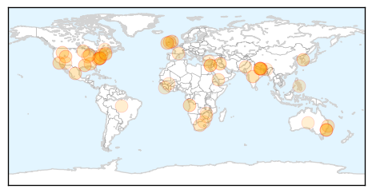
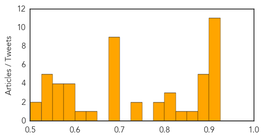
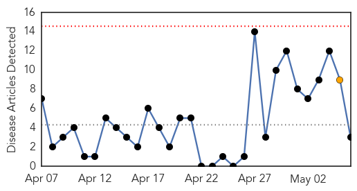
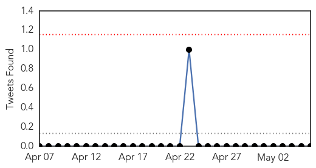

Unknown
30-Day Web Trend
0 alerts, 0 warnings

30-Day Twitter Trend
3 alerts, 0 warnings
Article Locations
Article Confidences
Top Articles:
- 0.917
- Chicago Tribune
- 0.917
- Chicago Tribune
- 0.917
- Chicago Tribune
- 0.917
- Chicago Tribune
- 0.917
- Chicago Tribune
- 0.917
- Chicago Tribune
- 0.917
- Chicago Tribune
- 0.917
- Chicago Tribune
- 0.917
- Chicago Tribune
- 0.913
- Westport issued with boil water notice following outbreak
- 0.910
- The world windows to Thailand
- 0.896
- Whatcom County WA Updates Milk Makers Fest E. coli Outbreak
- 0.894
- WHO plays down risk of epidemic outbreak in Nepal
- 0.890
- Surge in NSW flu cases prompts cruise ship warning
- 0.883
- BMJ Blogs: The BMJ Blog Archive The aftermath of Nepal’s earthquake—health sector response
- 0.881
- Surge in flu cases in NSW prompts cruise ship warning
- 0.866
- An uptick in Lyme disease in Utah?
- 0.831
- Rabbit owners at 'panic stations' in disease outbreak
- 0.819
- Dept. of Health: How much do you know about H20?
- 0.819
- Declaration by the High Representative, Federica Mogherini, on behalf of the EU on World Press Freedom Day
- 0.802
- 5 Things Dog Owners Need to Know About Alabama Rot
- 0.785
- Racing officials warn of horse-infecting virus
- 0.782
- Poultry industry receives some good news
- 0.747
- Washington's Milk Makers Fest E. coli Outbreak Numbers Rise
- 0.742
- Milk Makers Fest E. coli outbreak case tally grows to 42
- 0.697
- Saudi-led strikes target Houthi positions on border with Yemen
- 0.697
- PEN gala honours Charlie Hebdo despite uproar
- 0.697
- Netanyahu locked in talks as coalition hangs in balance
- 0.697
- Netanyahu clinches deal to form new Israeli government
- 0.697
- Despite party suspension, French far-right leader remains liability
- 0.694
- Very early virological failure and drug resistance mutations in a woman on antiretroviral therapy in Eastern Cape, South Africa
- 0.689
- Nitte varsity docs aid earthquake victims
- 0.684
- Bacteria to the Rescue! New Treatments for a Deadly Common Infection
- 0.675
- Column: Join the Conversation About Reducing Alzheimer’s Risk
- 0.644
- UN health agency expands support to areas cut off by quake
- 0.612
- Purdue researchers’ model tracks flu using Google, tweets
- 0.594
- Ghana, Business Advice, Jobs, News, Business Directory, Real Estate, Finance, Forms, Auto
- 0.592
- Roperos: HIV cases in region
- 0.583
- Fecal Microbiota Transplant Cures C diff, Blocks Multidrug-Resistant Pathogens
- 0.581
- Vesicular Stomatitis Confirmed in Arizona, Utah Equids
- 0.575
- Leicester fundraisers donate more than £340,000 to help earthquake victims in Nepal
- 0.561
- Sierra Leone ranks 169 « Awoko Newspaper
- 0.560
- 'Cruise Ship' Norovirus Bug Can Spread by Air, Study Finds
- 0.551
- Government opens probe into health fund abuse
- 0.547
- The deadly antidote
- 0.542
- Water and sanitation in health centres in Mali – podcast
- 0.528
- Press and Information Office
- 0.527
- Mugabe: Villainous or Misunderstood?
- 0.526
- International relief continues to pour in
- 0.523
- Bhutan’s medical team in Nepal expanded
Showing top 50 articles...
Top Tweets:
- 0.584
- Me cago en el dios de los trastes.
Cholera
30-Day Web Trend
0 alerts, 1 warnings

30-Day Twitter Trend
0 alerts, 0 warnings

Article Locations

Article Confidences

Top Articles:
Top Tweets:
-
No tweets found for May 06, 2015